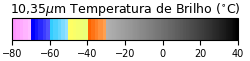

20.6°C
Umidade Relativa
100%
Máx: 100% • Mín: 100%
Pressão Atmosférica
946.5hPa
Máx: 948.2 • Mín: 946.5
Vento & Rajada
N
S
W
E
5.4 m/s
(19.4 km/h)
ESE • 111°
Rajada: 11.5 m/s (41.4 km/h)
Chuva / Pluviômetro
5.2mm
Última Hora:
5.2 mm
Acumulado 24h:
5.2 mm
Precipitação ativa detectada
Ponto de Orvalho
20.6°C
Temperatura de saturação do ar com 100% de vapor d'água.
Radiação Global
0.0KJ/m²
Período noturno (sem incidência direta).
Bateria do Datalogger
12.8V
Alimentação Solar OK
Transmissão Satelital
Transmissão GOES/SCD Operante
Atualização automática: a cada 60 min
Edéia (A029)
10,35µm Temp. Brilho (°C) • CPTEC/DSA

Realce CPTEC/DSA (IR 10,35µm)
🛰️ 2 km Nativa (Zoom 5)
18:10 UTC
15:10 BRT
Quadro 8 de 8
8 quadros (~1.5 horas)
4 (~40 min)
8 (~1.5h)
12 (~2.5h)
16 (~3.5h)
Precipitação Horária Acumulada
Volume de chuva a cada hora (mm)Total: 0.0 mm
Variação Térmica & Ponto de Orvalho
Temp. instantânea, máxima, mínima e sensação (°C)--
Análise Polar dos Ventos (Rosa dos Ventos)
Frequência por direção (16 rumos cardeais) e velocidadeVento: --
Radiação Solar Global & Umidade
Radiação global (kJ/m²) e umidade relativa (%)Pico: --